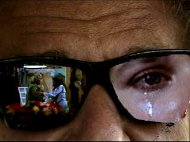

| Stunt
Man (SE)/ B+ ,B |
| Anchor
Bay/1980/130/ANA 2.35 |
A wonderfully eccentric film delivered like a baby from writer/director
Richard Rush. The Stunt Man satirizes the movie-making process
with gleefully mischievous insider knowledge.
Eli Cross is the director who will stop at nothing to
get what he wants on film. Cross is helming an action adventure on
location at a New England seaside resort. When a stunt goes disastrously
awry, Cross seizes on a fugitive on the run to takes over stunt
duties.
There are some outstanding glimpses of the stunt
process from a behind-the-scenes perspective. Reality and fantasy blur
as filtered through the lens of Cross. Eli Cross is the ruthless,
charming, cold-blooded heart of The Stunt Man. His glib dialogue,
story-boarded philosophy, and
determination to get the shot no matter what propels the film with roguish
energy.
Peter O'Toole is a wonderful Cross. Frail,
pale, he rules the roost of The Stunt Man with effortless
dialogue delivery. Steve Railsback plays the fugitive/stunt man Cameron
with good energy and bizarre innocence, yet he's less than camera ready.
A more dynamic screen presence might have made The Stunt Man live
on yet another level. Barbara Hershey is more than comfortable giving a
cheeky performance ass leading lady Nina Franklin.
 |
| Rush
reflects on The Stunt Man. ©Anchor Bay |
There's no doubt that Anchor Bay has taken
great care to make The Stunt Man look as good as possible. It's mostly
sharp, save for a number of close-ups on Barbara Hershey, which I assume
are intentionally softer and a few long lens shots. Some of the bright
outdoor scenes are very grainy, especially the credit sequence. A number
of compositions are also strongly lit with outdoor backlight, blowing
out the picture to a degree. Color appears accurate and well saturated.
Darker scenes are nicely balanced to provide good shadow detail and deep
blacks. Skin tones are quite natural with a good range.
The Stunt Man is available in a movie only
edition and this special edition. If you like the movie, it's a
no-brainer to get the full featured 2 disc special edition. The two hour
original documentary centerpiece is a terrific surprise. Richard Rush,
is tour guide for the documentary called The Sinister Saga of Making The Stunt Man.
Rush is consistently droll, in fact, capturing the same tone as the
film.
Rushes tour through the movie making process is consistently
entertaining and imaginative. This guy has not lost the thrill of movie
magic. One
of the best docs on making a movie I have seen.
|
|
|
|

Ghost
Dog: Way of the Samurai

Ancient Japanese samurai tradition
compared to new world Italian mobsters filtered through the imagination
of Jim Jarmusch. Forest Whitaker is outstanding.

Selections from the Feature
Archive include articles on
Akira Kurosawa, Blonde
Bimbos,
Frank
Darabont, Steven
Culp, John
Herzfeld or Vietnam:
The Hollywood Pariah, and many more....
Director Walks the
Wire
Balanced by an armor of movie lore and filmmaking daring, director
John Herzfeld is comfortable walking the high wire. Check out this
interview by Stu Kobak.

 Have
you visited Home Theater Talk
lately? One of the friendliest places on the Net for Home Theater and
DVD discussion, you can get help for installation problems or simply
share your opinions with other Vidiots. Have
you visited Home Theater Talk
lately? One of the friendliest places on the Net for Home Theater and
DVD discussion, you can get help for installation problems or simply
share your opinions with other Vidiots.

Images is a non-commercial Web site created for everyone who enjoys
movies and popular culture. Images is published quarterly; however, new
reviews will appear each week, so check back often.

Mystery writer Fred Hunter digs into classic
films on DVD. Check out his insightful reviews at The
Classics on DVD.
 Jim
Doolittle Jim
Doolittle
ISF Instructor. Premier calibrator and expert front projection system
setup technician in the Boston area.
|